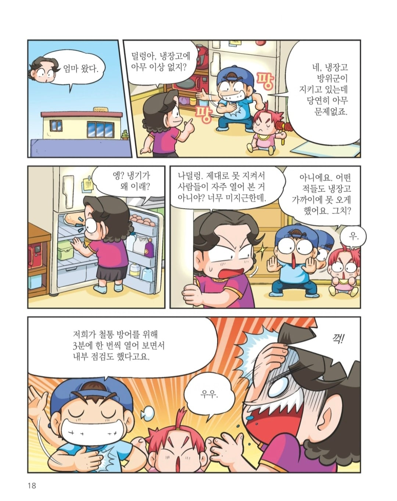
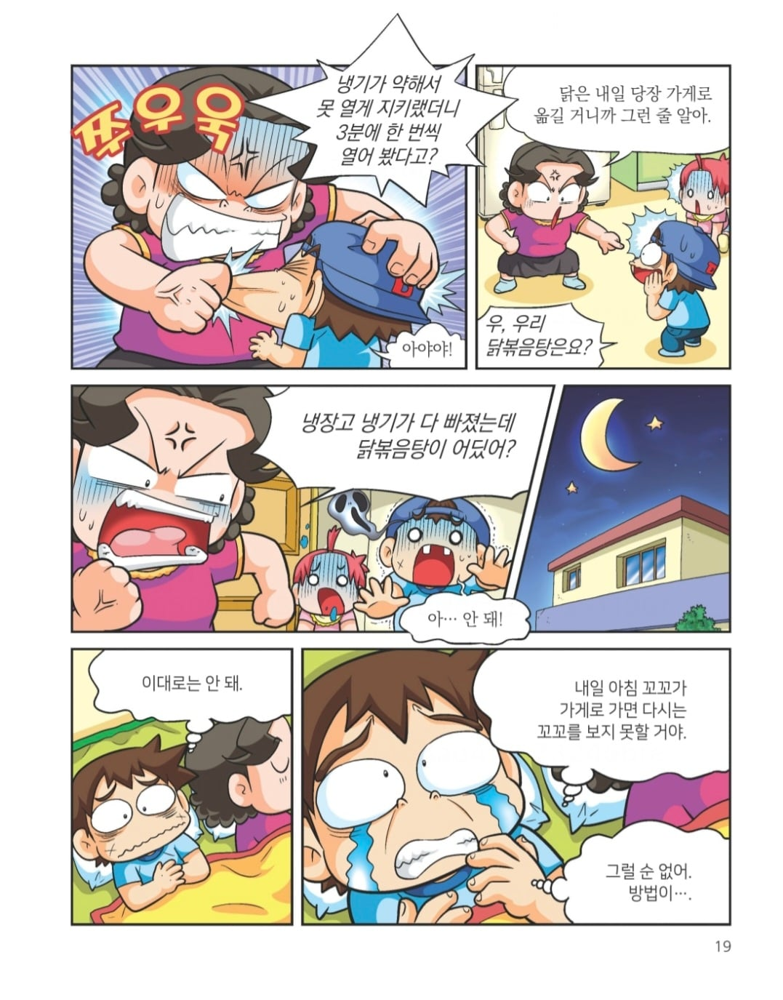
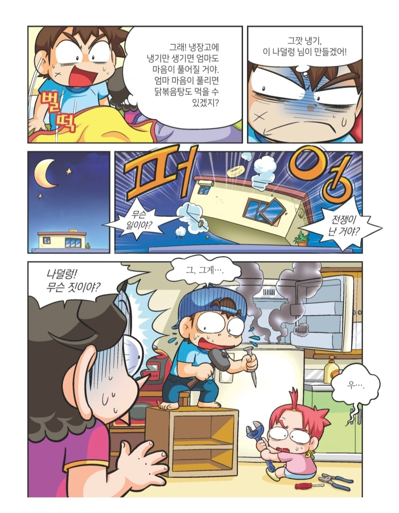
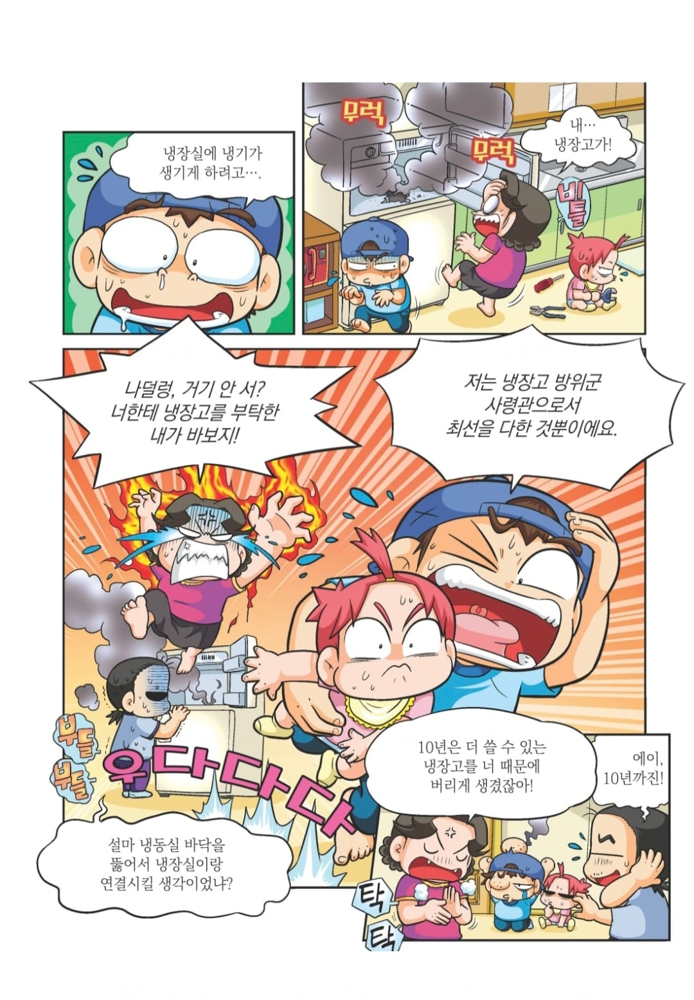

보통 기판은 뒤에있고 저부분은 단열재라 뚫어도 문제 없긴함
냉동실과 냉장실을 연결해도 문제가없어?
당장은 없을듯? ㅋㅋ
이미 다른 통로로 연결 되어있어 그니까 추가로 연결할 필요가없겠지
소형 냉장고는 그런 구조가 많음
저기 뚫으면 퍽 하면서 냉매만 빠지던뎅
덜렁아..
죽이고싶네
근데 그림 문정후 작가님인가
아님
아니구나. 막짤 남자 표정 그 특유느낌이라 문정후작가님인줄.
이 미친 새끼가 ㅋㅋㅋ
요즘 이거 유행이냐.
비슷한 만화를 개드립에서 봤다면 거진 이 글 쓴 애가 올린거임
이 글 올린 개붕이가 저 만화로만 개드립 오는 애임
저거 만화 사람 속터지게 보라고 만든거야?
속터지는 만화가 팔릴거라고 만든거겠지?
저 시절엔 저게 팔렸으니까ㅋㅋ
요즘 아따맘 짱구맘 영상 댓글에 욕달리는거랑 비슷한 느낌일듯
짱구나 이거나..
근데 오히려 구형 냉장고 아득바득 쓰면 전기세 때문에 손해 아닌가
닭볶음탕 거슬리네
생각해보니 닭도리탕이 일본말 섞여서 고친건데 님말 듣고보니까 굳이 싶네
이 만화 뭔데 자주보이냐 ㅋㅋㅋ
초딩들도 극혐하면서 봄 ㅋㅋ 너는 안이래야지 하는 거울 치료 가능
로크 이 미친 새끼 티원으로는 모자라서 여기까지..!